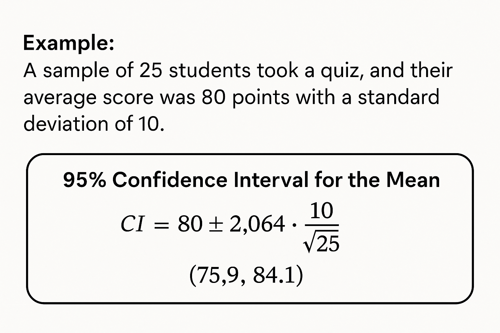

Can ChatGPT serve as the tutor I’ve been looking for?
As a college humanities student, I’ve always had some difficulty with math and related subjects. In my junior year statistics course, I’ve been struggling and in need of a tutor. While the University claims to provide free tutoring for every course, they have yet to find a single person to tutor for the class I am in.
Will ChatGPT be able to tutor me as well as a person would?
The Conversation
Prompt
hi im having a really hard time in my stats class
Response
Hey, I’m really sorry to hear that. Stats can be so tough—especially with finals around the corner. What’s been tripping you up the most? Is it a specific topic (like confidence intervals, hypothesis tests, sampling distributions…), or just the workload in general? I got you—we can tackle it together.
Prompt
I need help with confidence intervals. its SO difficult!
Response
Totally get that—confidence intervals are one of those topics that sound simple at first but then get confusing real fast. Let’s break it down together and make it feel less scary 💪
First up: What is a Confidence Interval (CI)?
At its core, a confidence interval gives you a range of values that likely includes the true population parameter (like the mean or proportion). We usually say we’re “95% confident” that the true value lies within this interval.
Example:
Let’s say you survey a bunch of Penn students about how many hours they sleep per night, and you get a sample mean of 6.8 hours with a standard deviation of 1.2. If your sample size is 50 students, a 95% CI would give you a range (like 6.5 to 7.1 hours) where the true average sleep for all Penn students likely falls.
The Formula for a Confidence Interval (for a mean) is:
[ = {x} t^* ] Where: - ({x}) = sample mean
- (s) = sample standard deviation
- (n) = sample size
- (t^*) = critical value from the t-distribution (based on your confidence level and degrees of freedom)
Let’s try one together if you want! Do you have a practice problem or assignment question we can work through? I can walk you through it step-by-step.
Prompt
lets try one yes!
Response
Perfect! Let’s walk through one together 💥
Here’s a sample problem we can work on:
A sample of 40 students was surveyed about how many hours of sleep they get per night.
The sample had:
- Mean sleep time (({x})) = 6.9 hours
- Standard deviation ((s)) = 1.3 hours
Construct a 95% confidence interval for the average number of hours all students sleep per night.
Step 1: Write down what we know
- ({x} = 6.9)
- (s = 1.3)
- (n = 40)
- Confidence level = 95%, so we’ll need the **(t^*)** value for 95% and df = 39
Step 2: Find the critical value (t^*)
Since (n = 40), degrees of freedom = (n - 1 = 39)
From a t-distribution table, the critical value (t^*) for 95% confidence and df = 39 is about 2.022.
Step 3: Plug into the formula
[ = {x} t^* = 6.9 ]
Let’s calculate: - ( ) - Margin of error: (2.022 )
Step 4: Final Confidence Interval
[ 6.9 (6.484, 7.316) ]
✅ Interpretation: We are 95% confident that the average number of hours all students sleep per night is between 6.48 and 7.32 hours.
Want to try one on your own now with different numbers? I can check your work too!
Prompt
can we do an easier one?
Response
Absolutely!! Let’s simplify it so the math feels more manageable 💛
🧠 Easy Practice Problem (with nice numbers)
A sample of 25 students took a quiz, and their average score was 80 points, with a standard deviation of 10.
Question: Construct a 95% confidence interval for the true mean quiz score of all students.
Step 1: Write down what we know
- ({x} = 80) (sample mean)
- (s = 10) (sample standard deviation)
- (n = 25) (sample size)
- Degrees of freedom = (n - 1 = 24)
Step 2: Find the critical (t^*) value
For 95% confidence and 24 degrees of freedom, the (t^*) value is about 2.064 (from a t-table).
Step 3: Plug into the formula
[ = {x} t^* = 80 ]
- ( = 5), so ( = 2)
- Multiply: (2.064 = 4.128)
Step 4: Final answer!
[ 80 (75.872, 84.128) ]
So we’re 95% confident that the true average quiz score is between 75.9 and 84.1 points 🎉
Do you want to try one just like this, but with your own numbers? Or would you rather go even simpler and do one with a known population standard deviation so we can use a z-score instead?
Prompt
thank you for your help! i feel better!
Response
Aww I’m so glad to hear that!! 🥹💛 You’re seriously doing great—confidence intervals are tricky at first, but you’re totally getting the hang of it. And I’m always here if you want to do more practice, prep for an exam, or even just vent about stats stress.
You got this. One confidence interval at a time 💪📊✨

My reflection
I think ChatGPT can be a really solid substitute for a stats tutor. It explained confidence intervals in a way that actually made sense and felt encouraging throughout. The step-by-step help felt personalized, and it made a tough topic feel way more manageable.